Hi, I'm Tomáš Novotný
A
MES specialist working with internal tools, improving processes, and keeping systems reliable, with a strong interest in Kubernetes and DevOps.
About
I started my journey in PLC automation, but I quickly realized that the true potential of Industry 4.0 lies in data and the cloud. Today, I manage complex MES systems for a plant with 1,500 employees, implementing solutions that streamline workflows and boost production efficiency.
Over time, my tech stack has evolved from TIA Portal into a comprehensive toolkit including MES, Kubernetes, Docker, JavaScript, and AWS, backed by several professional Certifications. My experience living and studying abroad during two Erasmus+ programs (Portugal and Slovenia) has shaped my ability to adapt to new environments and solve problems with a global perspective. I value agility and the ability to deliver high-quality results regardless of the setting.
When I’m away from the terminal, I’m an athlete and a traveler. I thrive on challenges, whether it’s rock climbing, conquering mountain peaks, or learning Italian as a hobby. I’m constantly seeking the perfect balance between the precision of an engineer and the freedom of a digital nomad.
I am looking for an opportunity to work in a challenging position that combines my engineering skills with modern technologies and offers professional development, interesting experiences, and personal growth.
Experience
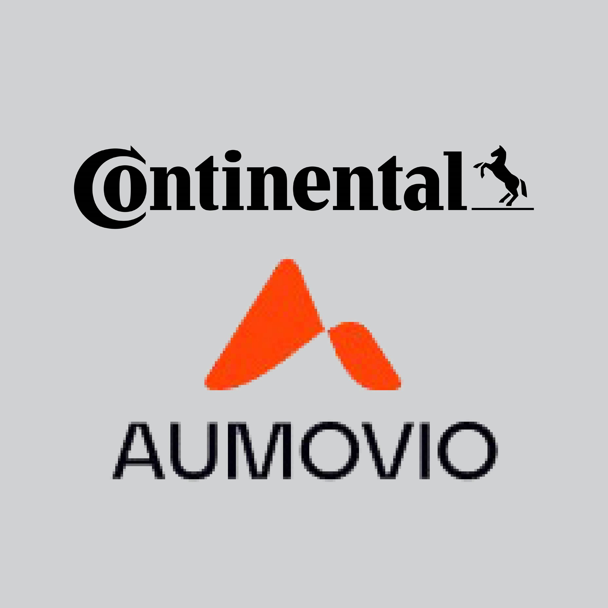
- System Ownership: Responsible for the full lifecycle and administration of the MES (Camline) and internal applications for a plant with 1,500 employees.
- Team Leadership: Managing a technical team (IT/MES Engineer and interns), including task delegation, technical onboarding, and professional mentoring.
- Cyber Security (PCSA): Acting as local security consultant; implementing global cybersecurity standards for the plant’s infrastructure.
- Full-stack Industrial Development: Docker, Kubernetes, Node-RED, RabbitMQ, JavaScript and more to build robust, scalable solutions.
- Data Management: Managing complex production data within Oracle and PostgreSQL environments.
- Cross-Plant Innovation: Designed and implemented custom features for traceability and process reliability, later adopted across other plants.
- Technology Shift: Transitioned from PLC programming to exploring MES and containerization to better understand the future of automated manufacturing.
- PLC Expert Team: Integrated as the sole intern within a 5-member expert maintenance team, contributing to programming and optimization of production lines.
- Automation Engineering: Developed PLC and HMI logic using Siemens TIA Portal / Simatic Manager.
- Workflow Optimization: Programmed custom Excel Macros to automate technical documentation and data analysis.
- Remote Operations: Maintained all responsibilities while studying abroad on Erasmus+ for 1 year (6 months Portugal, 6 months Slovenia).
- Head of digital checklist: Managing and taking responsibility for the entire system and the people involved.
Projects & Skills
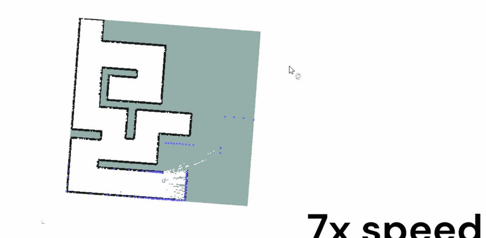
Autonomous robot navigation in 2D mazes using SLAM and Nav2 on ROS 2.
- Tools: ROS 2 Humble, SLAM Toolbox, Nav2, Flatland, C++, Python
- Full autonomous pipeline: LiDAR-based SLAM, occupancy grid mapping, and path planning.
- Robot explores unknown maze environments, builds a map, then navigates to the goal.
- Simulated in Flatland 2D with AMCL localization and Nav2 stack integration.
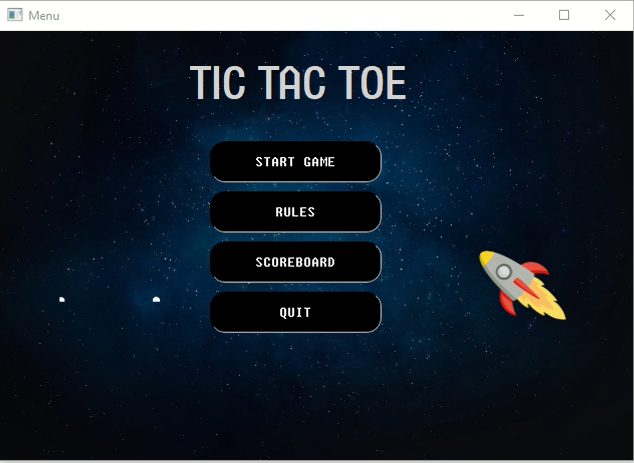
Networked Tic-Tac-Toe with GUI and client-server architecture over TCP/IP.
- Tools: C++, Qt Framework, QTcpServer, QTcpSocket, qmake
- Two players compete over a TCP/IP connection with real-time board synchronization.
- Full GUI built in Qt with separate server and client application roles.
- Handles connection setup, turn management, and win/draw detection over the network.
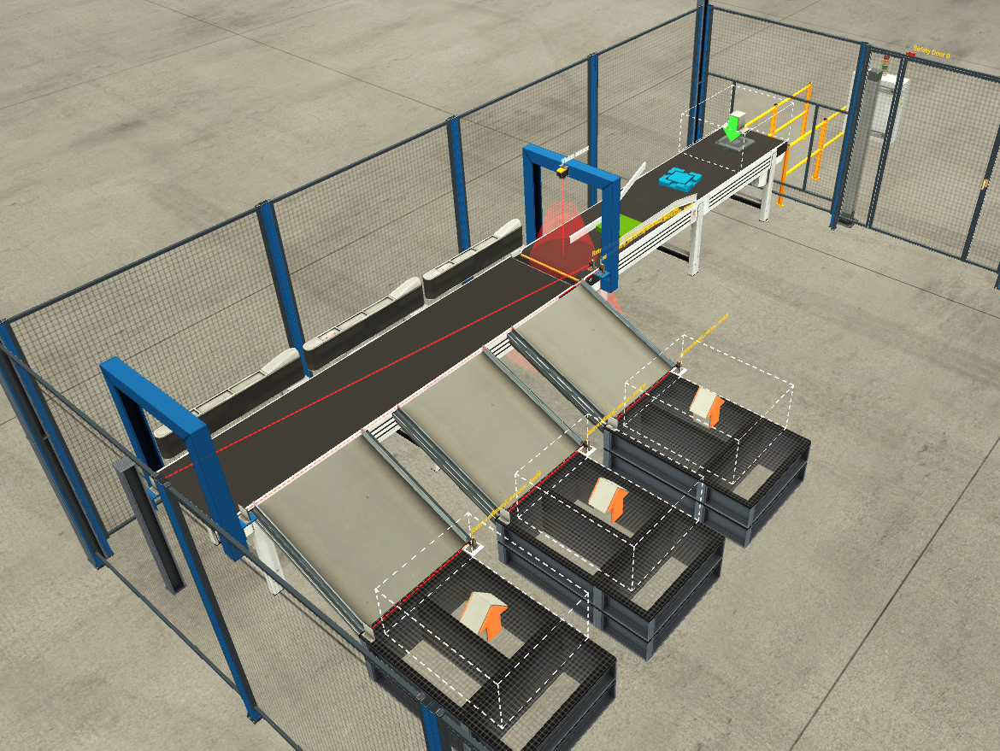
PLC automation examples integrating Factory I/O simulation with TIA Portal and WinCC SCADA.
- Tools: TIA Portal, Factory I/O, WinCC SCADA, S7-PLCSIM Advanced
- Practical models developed as part of a Master's Thesis at University of Žilina.
- Full integration between 3D simulation and real PLC logic with SCADA visualisation.
- Covers conveyor control, sorting, pick & place and other industrial scenarios.
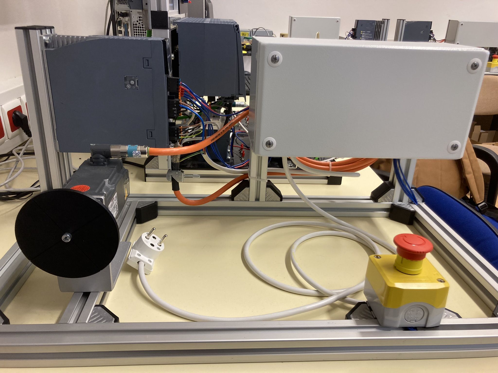
Motion control examples for SINAMICS S210 servo drive with SIMATIC S7-1500 PLC.
- Tools: TIA Portal V16, S7-1516F PLC, SINAMICS S210, TP700 HMI, PLCopen motion blocks
- Educational examples developed as Bachelor's Thesis at University of Žilina.
- Covers homing, positioning, velocity and torque control of SIMOTICS S-1FK2 servomotor.
- HMI panel for real-time parameter monitoring and manual axis control.
 Kubernetes
Kubernetes Docker
Docker AWS
AWS Linux
Linux Python
Python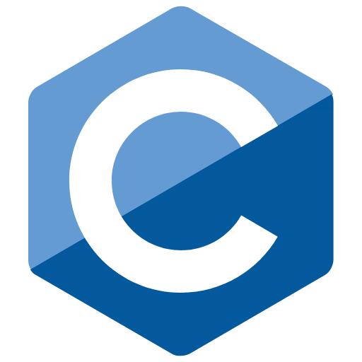
C C++
C++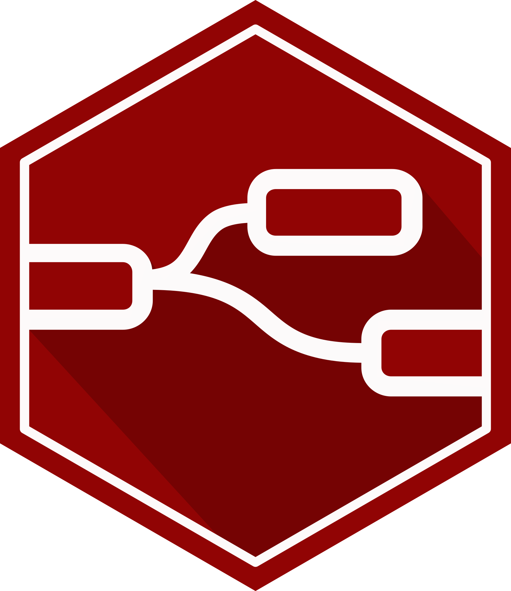
JS / Node-RED HTML
HTML CSS
CSS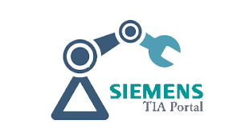
TIA Portal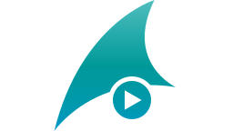
WinCC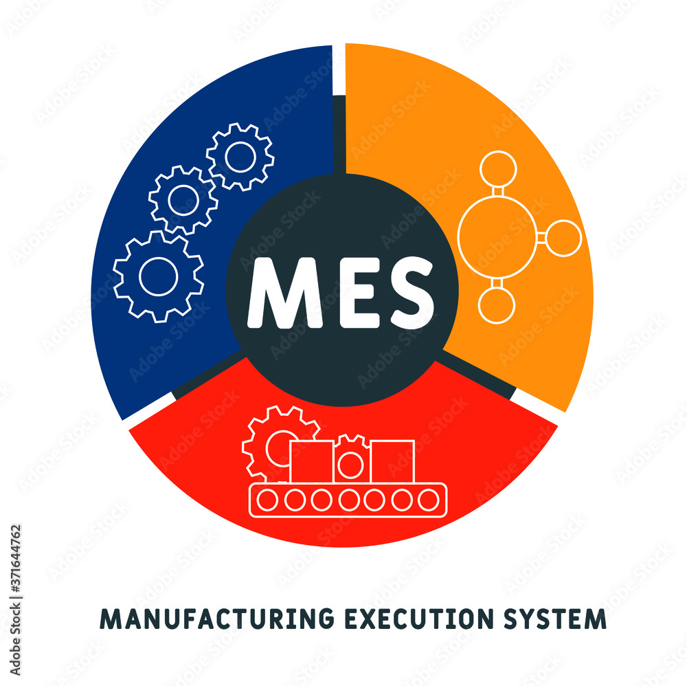
MES Systems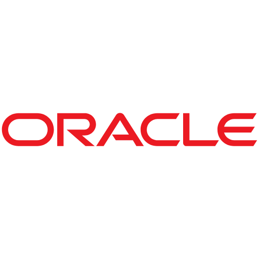
Oracle PostgreSQL
PostgreSQL RabbitMQ
RabbitMQ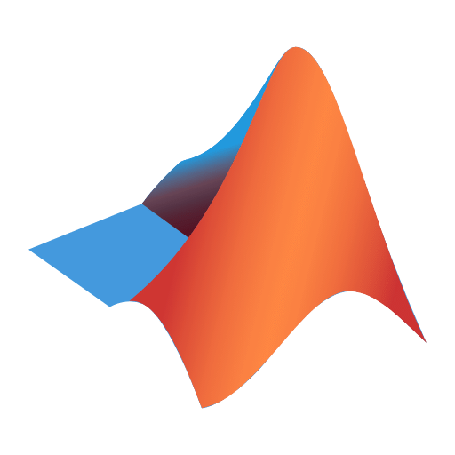
MATLAB Prometheus
Prometheus Grafana
Grafana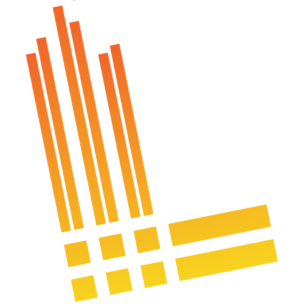
Loki Jira
Jira Confluence
Confluence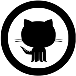
GitHub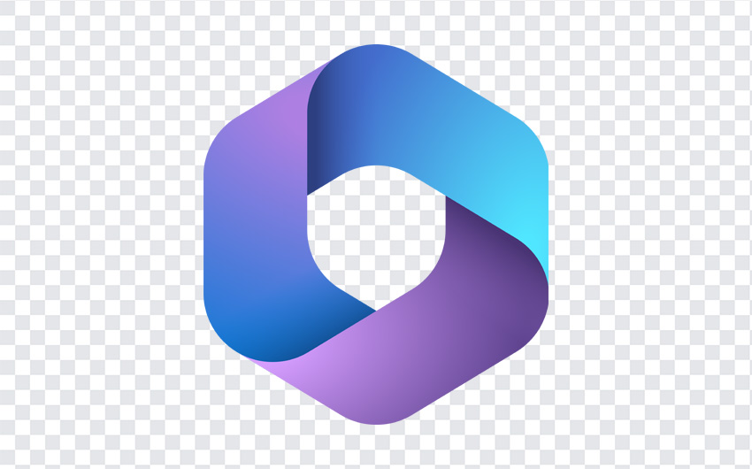
MS 365Certifications
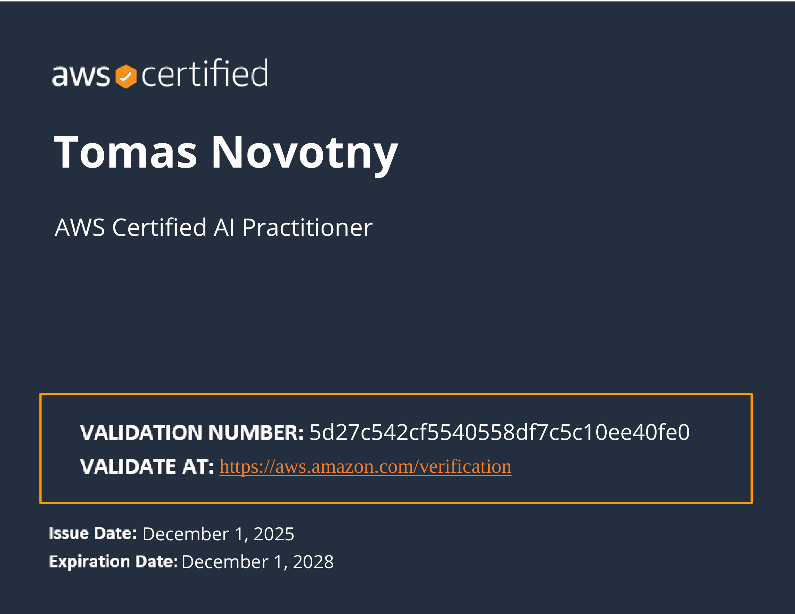
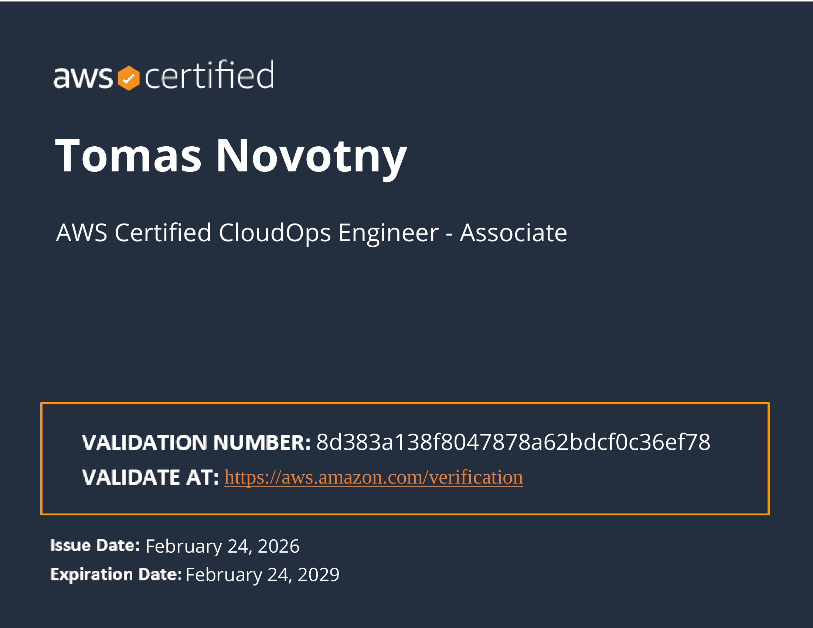
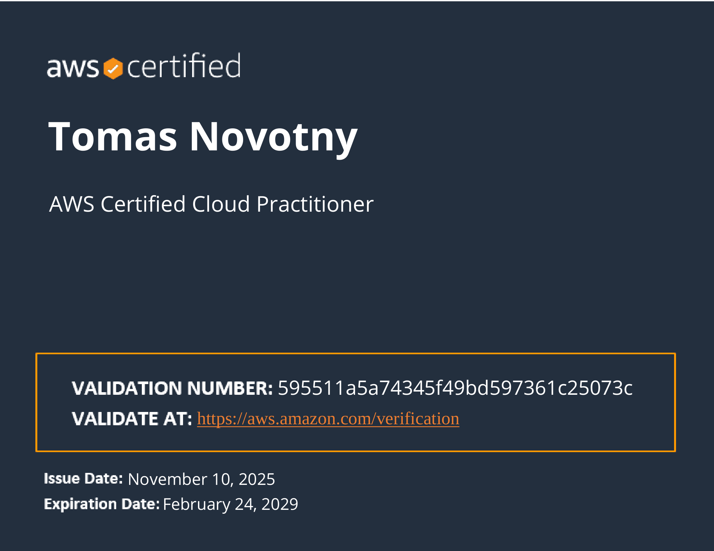
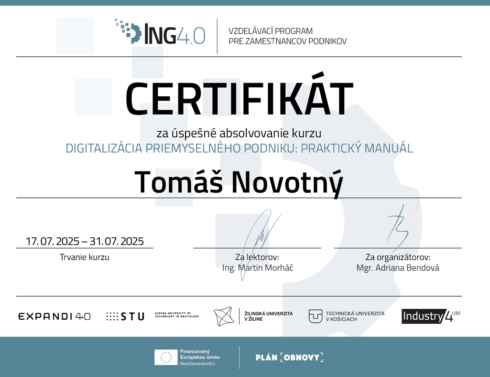
Education
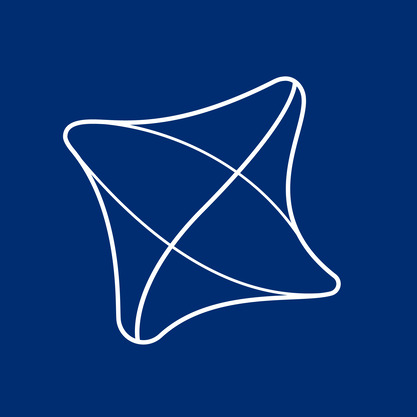
- Thesis: Integration of Factory I/O simulation with Siemens PLC for advanced industrial training (Grade: A)
- Key focus: Python (ML & Computer Vision), ROS 2, Safety functions for S7-1500
- University of Porto, Portugal (2023 – 2024)
- University of Maribor, Slovenia (2024 – 2025)
- Study in a foreign language, adapted to two different academic systems, remote work for Continental-Aumovio
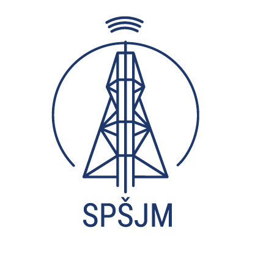
- Graduation project: Design and PLC control of a complex traffic intersection (S7-1200)
- Key focus: C, S7-1200 PLC in TIA Portal, logical systems, sensors